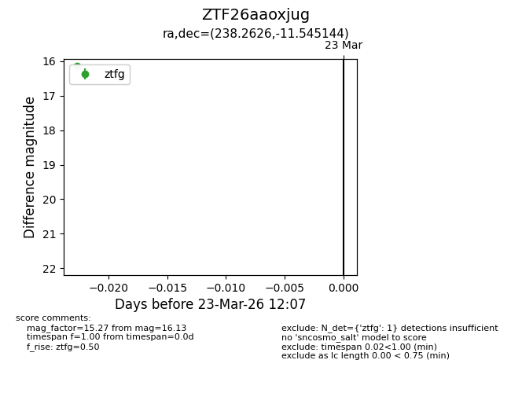
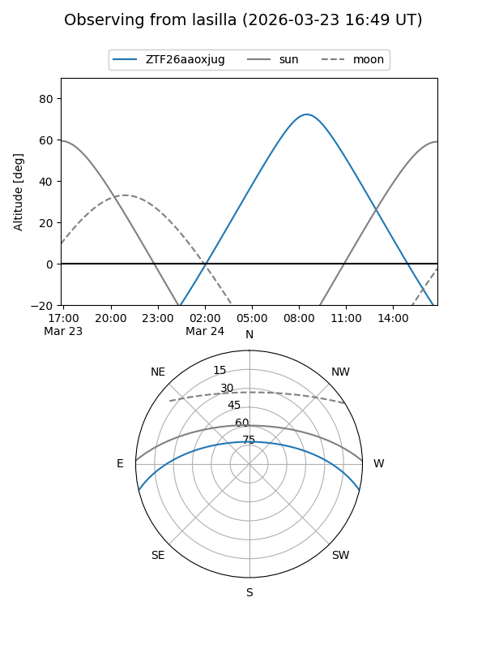
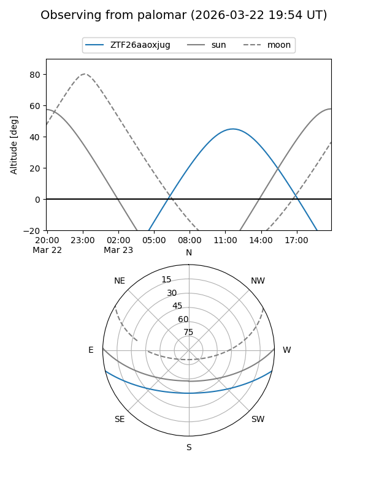

ZTF26aaoxjug
Target ZTF26aaoxjug at 2026-03-23 12:09
Aliases and brokers:
FINK: link
Lasair: link
ALeRCE: link
alt names
ZTF26aaoxjug (ztf,fink_ztf)
Coordinates:
equatorial (ra, dec) = 238.2626,-11.54514
equatorial (HMS+DMS) = 15:53:03.02,-11:32:42.52
galactic (l, b) = (357.7509,+31.39734)
Flags:
Photometry:
last ztfg=16.13
1 ztfg detections
Lightcurve

Visibility


Additional plots